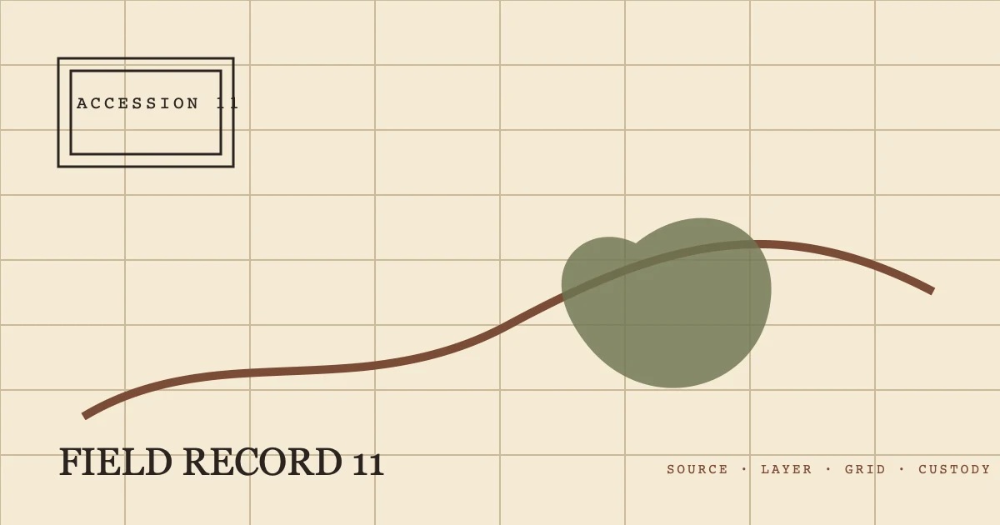

ACCESSION 11%%R11_EYEBROW%%
%%R11_TITLE%%
%%R11_SUMMARY%%- 登记
- %%AUTHOR_NAME%%
- 发布
- 复核

展开层位索引
%%R11_SECTION_LABEL_1%%
%%R11_H2_1%%
%%R11_BODY_1_A%%
%%R11_MODULE_1%%
%%R11_MODULE_5%%
%%R11_MODULE_2%%
%%R11_MODULE_6%%
%%R11_MODULE_3%%
%%R11_MODULE_7%%
%%R11_MODULE_4%%
%%R11_MODULE_8%%
%%R11_BODY_1_B%%
%%R11_SECTION_LABEL_2%%
%%R11_H2_2%%
%%R11_BODY_2_A%%
%%R11_BODY_2_B%%
%%R11_SECTION_LABEL_3%%
%%R11_H2_3%%
%%R11_BODY_3_A%%
%%R11_BODY_3_B%%
%%R11_SECTION_LABEL_4%%
%%R11_H2_4%%
%%R11_BODY_4_A%%
%%R11_BODY_4_B%%
%%R11_FAQ_TITLE%%
%%R11_FAQ_Q_1%%
%%R11_FAQ_A_1%%
%%R11_FAQ_Q_2%%
%%R11_FAQ_A_2%%